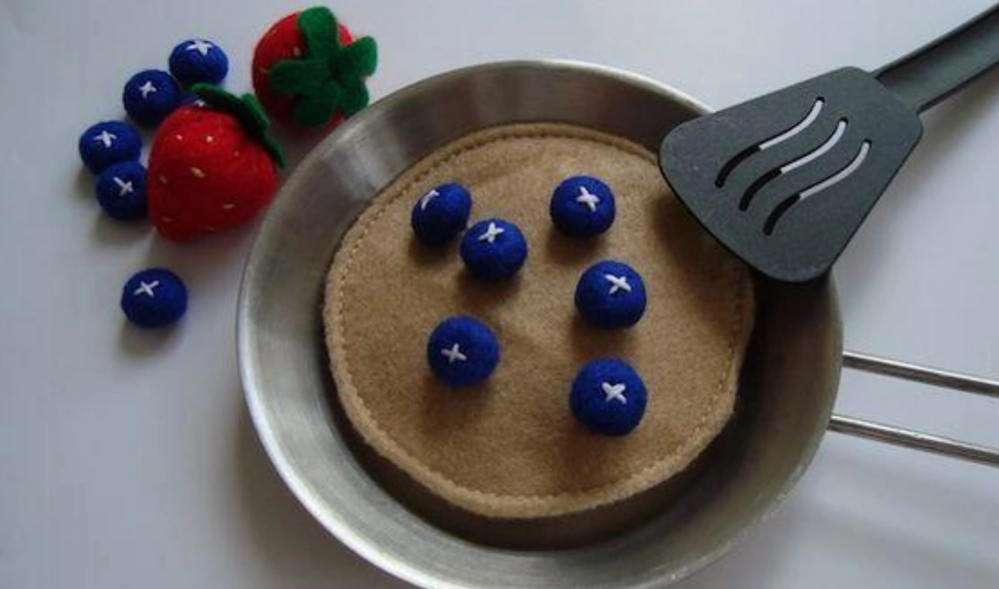

Odin Recipes
Pancakes

description
Fluffy, enigmatic creatures that materialize in kitchens,
defying gravity and delighting taste buds with their paradoxical perfection.
ingredients
- 1 cup flour
- 1 egg
- 1 drizzle of milk
directions
- mix ingredients
- cook on flat surface
- serve with maple syrup, butter, or fruit sauce